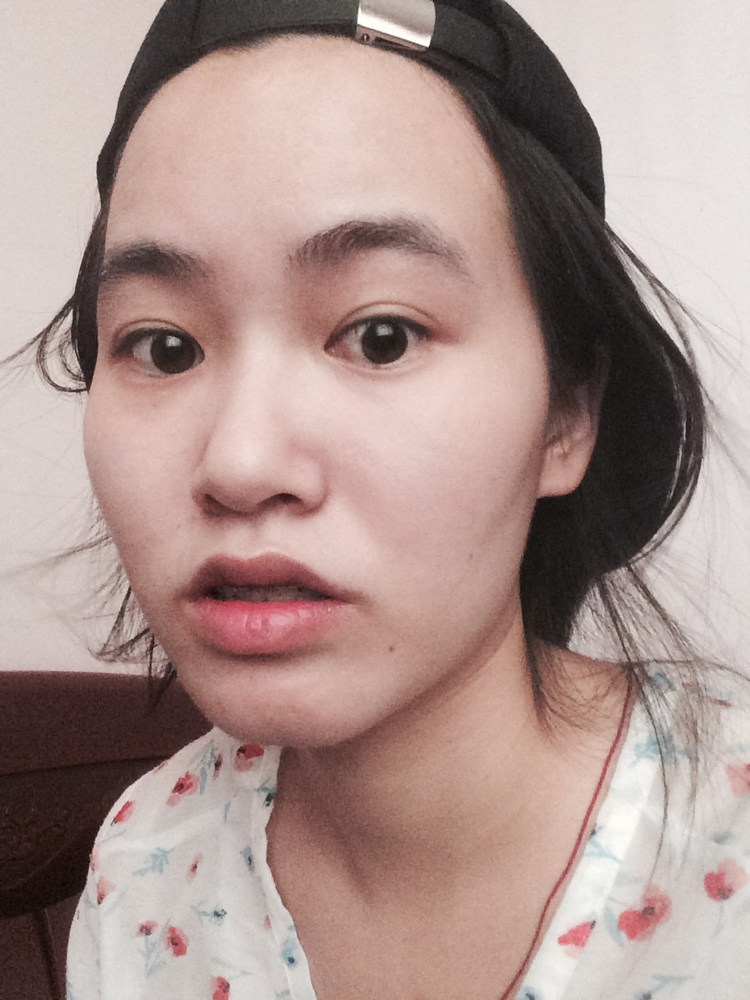

这几天在练车...人晒呀晒，累呀累，连吃的欲望都没有了，这还是我吗...真希望无人驾驶车早点出来，那么许多人不用像我一样遭罪受了，真的好讨厌晒太阳...
所以原本打算写的诗集也推延吧，因为无心了，我晚上中午做梦都是科目二的事，也是醉了。迷妹昨天看了四少爷f(x)的日本con，有些些激动，毕竟是看着她们出道的，从杀马特风到御姐范儿，也看着她们走向下坡，不过还好都挺过来了...我个人觉得吧，剩下四人不会解散，团魂还是存在的，大风大浪一起过来，现在在自己的岗位上也有一片新天地了。但这种东西吧，最懂的还是她们自己了...
自认为自己喜新厌旧特别厉害。就比如说idol，基本上sm家的我都饭过，出道的时候我都爱的疯狂，到了辉煌期我就不怎么惦记了...我对自己都挺无语的。最近出来了NCT，真的要做姐姐饭了呢，虽然在RV时期就已经意识到，但没想到这么快。我饭韩圈将近十年，从小学被同学带进之后就没出过，但更新换代的速度让我也有点吃惊
- Super Junior
- 少女时代
- f(x)
- EXO
- Red Velvet
- NCT
哎，这让我有点羞耻...所以平常我记性不好是有原因的，我的一大部分都给我们家idol了...
另外占据我生活一大部分就是日剧了。记得小学毕业看了《恋空》之后就一发不可收拾了，虽然这是电影...那时就觉得女主新垣结衣好美，三浦春马好帅，小时候嘛，要理解。之后就陷入了悬疑类型的日剧，像《侦探学园q》《神探伽利略》《SPEC》...日剧给我的感觉就是你脑洞有多大，他就能拍成多大，但不会让我们观众觉得很傻，庸俗。
先就唠嗑到这里吧，我想去看电视了，学了一天的车真的好累呀呀呀...
我傻样，真被晒傻了|||
